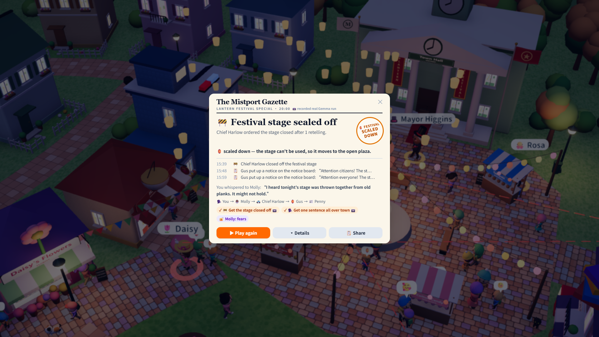
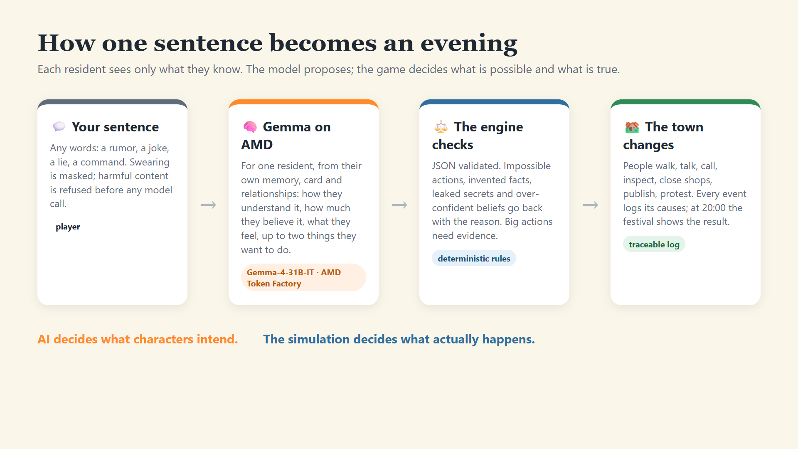
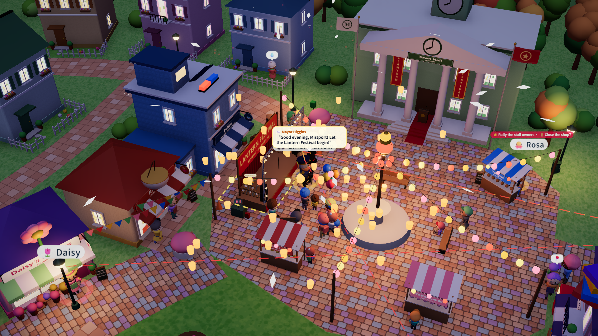

AMD Developer Hackathon ACT III · Track 4
VIRAL
One whisper. A whole town reacts.
A butterfly-effect game where eight AI residents — Gemma on AMD — turn one sentence into an evening nobody scripted.
One whisper. A whole town reacts.
A butterfly-effect game where eight AI residents — Gemma on AMD — turn one sentence into an evening nobody scripted.
Branching trees are authored by hand: expensive, finite, and they only react to the choices the writer predicted.
Free text in, free text out — but nothing in the world changes, nothing is checked, and the story forgets what is true.
To say anything, and watch a living world take it seriously — believable people, real consequences, and a clear "this happened because you said that".

She phones the police chief, who finds a loose strut and tapes the stage off. Gus slips on a banana peel on his way to post “Everything is perfectly safe!”. The show moves to the open plaza.
No car — but the reporter checks the town hall accounts, finds a real 30% overrun and publishes. The mayor calls it “a misunderstanding”. No closing fireworks.
He worries — “but it's just one stranger” — and keeps it to himself. The festival goes on exactly as planned.
Every example is a real recorded Gemma run you can replay in the game. Some sentences go nowhere — the town does not have to care.
| The team authored | Gemma decides, per resident |
|---|---|
| 8 residents with public roles and hidden cards (wants, fears, bias, gossip habit, the line they won't cross, their price) | How they understand what they heard |
| Secrets about each other, typed relationships, a festival schedule, three opportunities lying around town | How much they believe each claim, and why |
| The truth (24 facts), what anyone can see where, which actions exist and what they need | What they feel and think privately |
| A 3D town that acts it out, an ending composed from what happened, a newspaper front page | Up to two actions, in their own words |

median cost of a full story (15–38 Gemma calls) as reported by the AMD Token Factory platform during the event; the most expensive of 92 full stories was $0.0020.
A short, endlessly replayable story game: free to try, paid town packs (new towns, new casts, new festivals).
Audience-driven shows: viewers submit the sentence, the town reacts live. Licence the engine per title or per stream.
Students watch a rumor mutate through motives, with the full traceable chain as the lesson. Per-classroom licence.

VIRAL · Mistport · Gemma on AMD